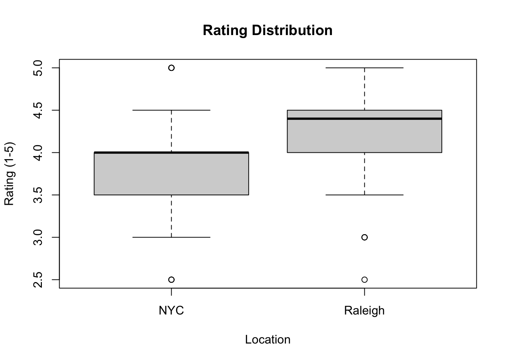

2 Data
Utilizing Python and the Pandas library, we initiated the web scraping process to compile our final data set in CSV format.
2.1 Data Extraction
Our data extraction process began with leveraging the Yelp Fusion API, a tool that provides access to Yelp’s extensive global business directory. To initiate this process, we submitted a developer application for a private API key through the Yelp Fusion website. Fortunately, the acquisition of the API key and the method to define the appropriate endpoint for our queries were fairly straightforward. More specifically, we used the ‘businesses search’ endpoint to search the Yelp database and retrieve information about businesses, including location, category, and keywords.
However, our interaction with the Yelp Fusion API was not without limitations. Notably, businesses lacking any Yelp reviews would not be returned by the API, leading to the exclusion of new boba shops. Furthermore, the API imposed restrictions, limiting us to 500 API calls per day and three reviews per business.
To optimize the efficiency of data retrieval from the API, we implemented a Yelp API wrapper obtained from the GitHub repository authored by @gfairchild. The Yelp API wrapper functioned as an intermediary layer, simplifying the communication process between our system and Yelp’s data services. By leveraging the wrapper, we were able to enhance the clarity of our code and simplify the technical intricacies associated with making requests directly to the API.
Having secured access to the Yelp Fusion API, we moved on to defining the variables for our analysis. Despite Yelp offering a diverse array of information, we encountered instances where certain data fields, such as price or wifi, contained many null values. We chose to move forward by discarding variables where the number of null values exceeded 50% of the total number of values and omitted the “price” and “wifi” features provided from Yelp. We moved forward in our analysis with the features listed below.
## [1] "Name" "Phone" "Rating"
## [4] "Address" "Street.Address" "City"
## [7] "Categories" "Review.Count" "Latitude"
## [10] "Longitude" "Reviews" "source"
## [13] "Authenticity" "Restaurant" "chain"
## [16] "Bubble.Tea_ind" "Coffee...Tea_ind" "Juice.Bars...Smoothies_ind"
## [19] "Taiwanese_ind" "Tea.Rooms_ind" "Desserts_ind"
## [22] "Ice.Cream...Frozen.Yogurt_ind" "Shaved.Ice_ind" "Donuts_ind"
## [25] "Asian.Fusion_ind" "Vietnamese_ind" "Cafes_ind"
## [28] "Bakeries_ind" "Ramen_ind" "Arcades_ind"
## [31] "Chicken.Wings_ind" "Sandwiches_ind" "Japanese_ind"
## [34] "Waffles_ind" "Sushi.Bars_ind" "Custom.Cakes_ind"
## [37] "Dim.Sum_ind" "Hong.Kong.Style.Cafe_ind" "Creperies_ind"
## [40] "Chinese_ind" "International.Grocery_ind"Each shop, which is also each Yelp entry, is designated with up to three tags. These include phrases like “bubble tea” or “coffee shop”. We filtered on the tag “bubble tea” to finish designating our data sets for both Raleigh and New York City (NYC). The source variable attaches each shop to a location.
2.2 Data Manipulation
Before proceeding with the modeling phase, we conducted further data manipulation. Specifically, we employed string splitting on the tags to create binary indicator variables for each of the shop’s categories. A shop could have three categories at maximum. For instance, a binary indicator variable for bubble tea was set to 1 if the observation fell under the bubble tea category and set to 0 otherwise. This approach allowed us to capture nuanced insights for a more comprehensive analysis of boba shops in the Raleigh and NYC areas.
This concluded the iterative process to achieve a final data set. Below are the first three observations of the final data set.
## Name Phone Rating Address
## 1 OMTea Boba & Bites 19198098493 4.5 3901 Capital Blvd, Raleigh, NC 27604
## 2 Moge Tee - Raleigh 19842009008 4.5 2304 Hillsborough St, #100, Raleigh, NC 27607
## 3 Cha House - Raleigh 19195941980 4.5 3001 Hillsborough St, Ste 108, Raleigh, NC 27607
## Street.Address City Categories Review.Count Latitude
## 1 3901 Capital Blvd Raleigh Bubble Tea, Coffee & Tea, Juice Bars & Smoothies 57 35.83500
## 2 2304 Hillsborough St Raleigh Bubble Tea 90 35.78758
## 3 3001 Hillsborough St Raleigh Bubble Tea, Taiwanese, Coffee & Tea 86 35.78926
## Longitude
## 1 -78.58510
## 2 -78.66618
## 3 -78.67615
## Reviews
## 1 ["My mom loves boba and has been trying to make me love for it for years. I don't like the jelly feel of it. This time she ordered me a mango smoothie with...", "I ordered an iced honeydew milk tea with boba and it was delicious! Cute little shop and I can't wait to try the popcorn chickens, they looked so good! Ppl...", 'I have been craving Matcha boba tea and decided to order delivery from OMTea for lunch. This place is excellent. They offer so many lactose and dairy free...']
## 2 ["One of the best boba I've had in the east! Chewy and fresh. The tea is fragrant too, tho I wish it was stronger in taste.\\n\\nThe menu is soooo extensive, and...", "This is by far my favorite tea house in Raleigh. I've been on a bit of a boba tea kick and have visited so many recently but I keep going back to Moge. \\nI...", "Out of all the bubble tea chains we've tried in the Triangle (e.g., Cha House, Quickly), Moge Tee has been the best and most consistent in terms of quality..."]
## 3 ["Such a cute and clean place, it's well decorated and inviting with a friendly staff, and solid menu. Enough boba options to chose from, and even vegetarian...", 'I enjoy coming here for lunch. I always get the tofu rice plate and a bubble tea. The plate comes with a boiled egg and steamed broccoli. It feels healthy...', 'Cha House was hit or miss.\\n\\nPros:\\n* Easy online ordering. Phone-friendly user interface.\\n* Oolong Classic Milk Tea and Lychee Fruit Tea were good.\\n* Pudding...']
## source Authenticity Restaurant chain Bubble.Tea_ind Coffee...Tea_ind
## 1 raleigh_boba FALSE FALSE FALSE TRUE TRUE
## 2 raleigh_boba TRUE FALSE TRUE TRUE FALSE
## 3 raleigh_boba TRUE FALSE TRUE TRUE TRUE
## Juice.Bars...Smoothies_ind Taiwanese_ind Tea.Rooms_ind Desserts_ind Ice.Cream...Frozen.Yogurt_ind
## 1 TRUE FALSE FALSE FALSE FALSE
## 2 FALSE FALSE FALSE FALSE FALSE
## 3 FALSE TRUE FALSE FALSE FALSE
## Shaved.Ice_ind Donuts_ind Asian.Fusion_ind Vietnamese_ind Cafes_ind Bakeries_ind Ramen_ind
## 1 FALSE FALSE FALSE FALSE FALSE FALSE FALSE
## 2 FALSE FALSE FALSE FALSE FALSE FALSE FALSE
## 3 FALSE FALSE FALSE FALSE FALSE FALSE FALSE
## Arcades_ind Chicken.Wings_ind Sandwiches_ind Japanese_ind Waffles_ind Sushi.Bars_ind
## 1 FALSE FALSE FALSE FALSE FALSE FALSE
## 2 FALSE FALSE FALSE FALSE FALSE FALSE
## 3 FALSE FALSE FALSE FALSE FALSE FALSE
## Custom.Cakes_ind Dim.Sum_ind Hong.Kong.Style.Cafe_ind Creperies_ind Chinese_ind
## 1 FALSE FALSE FALSE FALSE FALSE
## 2 FALSE FALSE FALSE FALSE FALSE
## 3 FALSE FALSE FALSE FALSE FALSE
## International.Grocery_ind
## 1 FALSE
## 2 FALSE
## 3 FALSEAfter achieving a final data set, we split it into two data sets by location. This work can be found in the R folder of the Xiaolongbao respository under the week 11 RMD. Raleigh had n= 43 observations while NYC had n= 70 observations, each with different column counts due to the category tag columns. Raleigh had 28 columns, while NYC had 31 columns. The following variables formed the core of our analysis:
Name
Rating
City
Categories
Review Count
Source
Additional variables like chain, authenticity, and restaurant were imputed by using external sources such as Google and our own expertise.
2.3 Data Exploration
Prior to analysis, we performed some exploratory data analysis in RStudio. Yelp’s ratings and reviews work by allowing users to rate businesses on a scale of one to five and write a review about their experiences (Yelp Reviews in 2023: Complete Guide, 2023). One of the most thought-provoking visualizations we crafted was a boxplot comparing the distribution of ratings of boba shops in Raleigh and NYC, pictured below in Figure 1.

Contrary to our initial expectations, the boxplot revealed that Raleigh-based boba shops exhibited higher ratings compared to their counterparts in NYC by 0.35 stars on average. We expected NYC to have higher ratings since it is known as a “haven for Chinese cuisine,” including boba (Tran, 2021). While at first glance it seemed like there was a difference in mean ratings between the two locations, we sought a more quantitative approach. Therefore, we conducted a statistical test to assess the significance of the observed variations in ratings between Raleigh and NYC, highlighted in section 3.